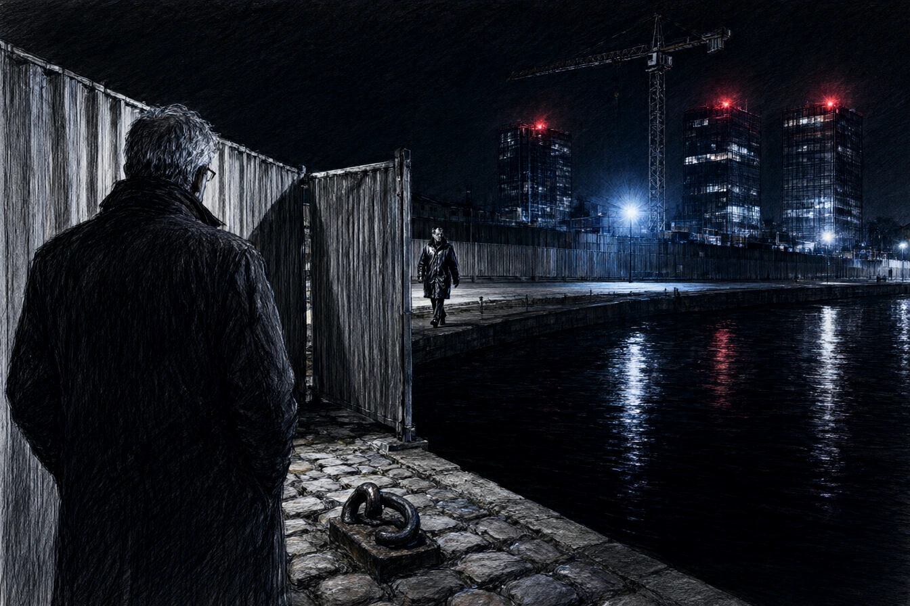

Dans son atelier d'architecte du quai Saint-Thomas à Strasbourg, où les tables à dessin de poirier portaient encore des rouleaux de calque toilé et des pots d'encre de Chine, Antoine Dubois taillait un crayon de mine de plomb avec un canif d'ivoire. À soixante-deux ans, Antoine avait restauré la tour nord du temple Neuf et l'ordonnance classique de la préfecture.
En face de lui, assis dans un fauteuil de cuir fauve qu'il n'avait pas pris la peine de repousser, Julien Weber, délégué général de la Société d'Aménagement du Grand Est, tapotait sur sa montre connectée.
« Le plan de masse du secteur Danube a été validé en conseil métropolitain hier soir, Dubois. Nous n'allons pas construire des toitures à deux pans et des encadrements de grès rose pour complaire à vos manies d'archéologue. Les investisseurs exigent des façades miroir à réflexion solaire totale. « Le grès rose absorbe l'humidité des bras de l'Ill depuis huit cents ans, Julien, » répondit le vieux maître sans quitter sa lame. « Vos parois de verre renvoient la réverbération sur le pavé, étouffent les passants en été et transforment la ville en salle d'attente d'aéroport international. » »
Weber eut un rire bref, presque compatissant.
« La ville n'appartient plus aux fantômes des tanneurs, mon cher oncle. Elle appartient aux cadres supérieurs des banques européennes qui veulent voir le ciel dans leur salon sans avoir à respirer l'odeur du canal. Le dossier de permis est sur votre table. Signez la dérogation patrimoniale. »
* * *
À minuit, Antoine marchait sur les berges du bassin d'Austerlitz, là où les anciens entrepôts portuaires laissaient place aux premières tours de verre de la ZAC Danube.
L'eau sombre du bassin ne reflétait aucune étoile. Elle renvoyait les lignes verticales de trois blocs de dix-huit étages dont les parois miroitantes démultipliaient les diodes rouges des alarmes de chantier.
Près d'une grue à tour, une silhouette en imperméable de cuir marchait d'un pas rapide le long des palissades. C'était Julien Ostermann, le jeune adjoint à l'urbanisme, un dossier bleu sous le bras.
Antoine l'appela par son prénom.
Ostermann s'arrêta sous le halo d'un projecteur de sécurité.
« Monsieur Dubois ? Qu'est-ce que vous faites sur un chantier à cette heure ? « Je regarde ce que vous faites de ma ville, Julien. Vous rasez les ateliers de charpente navale pour bâtir des glaces sans tain. » « Nous créons dix mille mètres carrés de bureaux haute performance énergétique, » répondit le jeune élu d'un ton administratif bien rodé. »
Il tapota le dossier bleu contre sa jambe.
« Votre cabinet a touché quarante mille euros d'honoraires pour l'étude d'intégration historique. Si vous refusez de valider l'avis d'impact, la chambre de commerce confiera le lot suivant à un cabinet de Rotterdam. Vous n'avez plus l'âge de jouer les héros de quartier. »
Antoine s'approcha de la palissade de tôle.
À travers une fente d'assemblage, il vit le socle de béton de la tour numéro deux : une dalle coulée sur l'ancien quai des mariniers, recouvrant les vieux pavés de porphyre et les anneaux d'amarrage de fonte où les péniches de foin accostaient autrefois.
* * *
Le lundi matin, la commission consultative d'architecture siégeait dans la grande salle de l'Hôtel de Ville, sous les portraits officiels des anciens maires.
Julien Weber présenta les maquettes numériques en relief, montrant des perspectives aériennes où Strasbourg disparaissait sous des reflets argentés et des nappes de nuages synthétiques.
Monsieur le maire se tourna vers Antoine Dubois, assis au bout de la table de chêne.
« Maître Dubois, votre rapport sur l'harmonie des gabarits ? »
Antoine se leva lentement. Il sortit de sa serviette un morceau de grès rose gros comme le poing, ramassé sur le talus du bassin Danube, et le posa au milieu des maquettes de plastique blanc.
La pierre rugueuse, tachée de mousse verte et d'oxyde de fer, jurait au milieu des parois lisses.
« Les miroirs ne conservent rien, monsieur le maire, dit le vieil architecte d'une voix très calme. Ils renvoient la lumière du jour et s'éteignent à la première nuit. Dans cinquante ans, les joints de silicone fuiront, le verre sera fendu par le gel rhénan, et il ne restera de votre ville idéale qu'une falaise de débris coupants. »
Il ramassa sa serviette de cuir.
« Vous n'avez pas besoin d'un architecte pour couler du béton sur vos souvenirs. Vous avez besoin d'un vitrier. »
Antoine tourna le dos à l'assemblée ébahie, poussa la porte monumentale de l'Hôtel de Ville et descendit les marches vers la place Broglie, où les platanes centenaires perdaient leurs feuilles d'or sous le soleil d'automne.